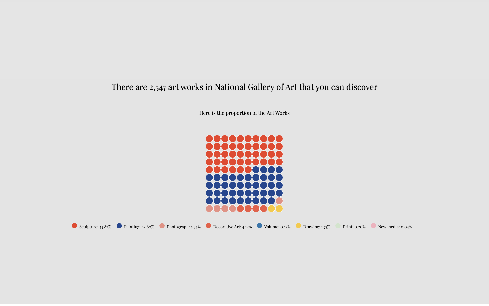
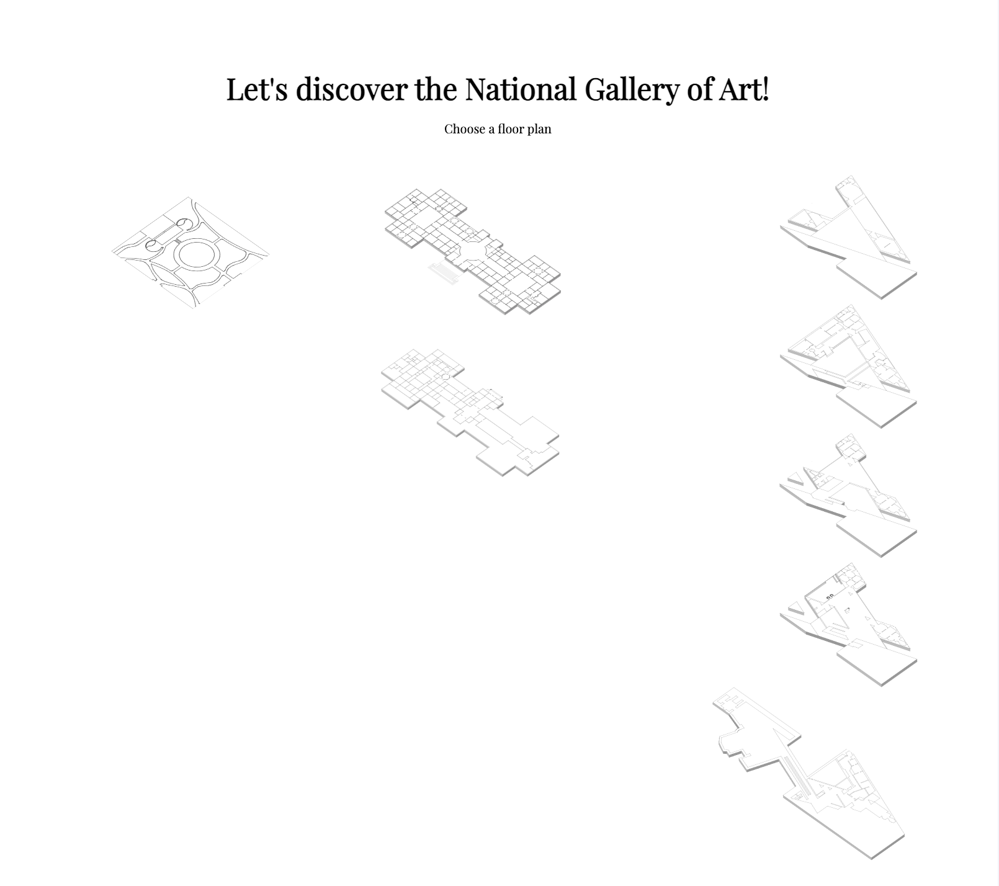
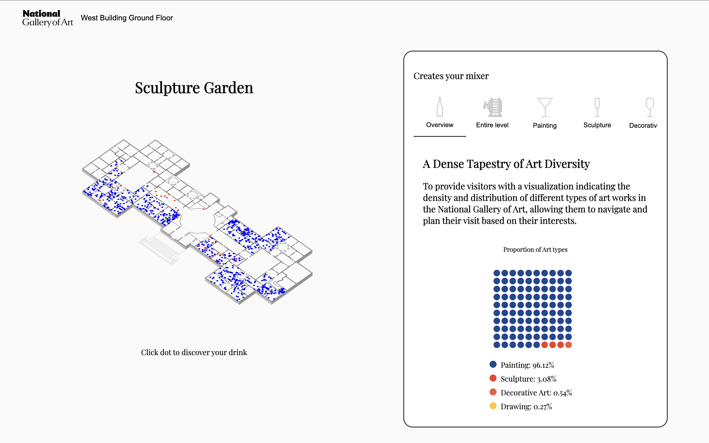
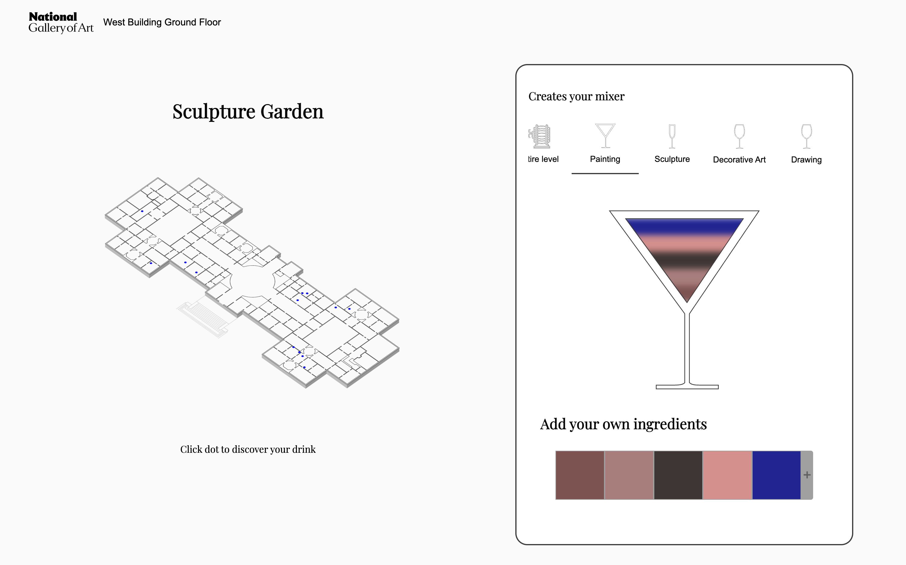
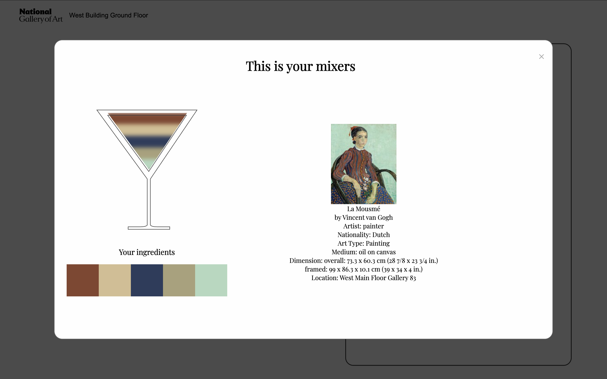

“Blending art and mixology into an immersive digital experience where visitors craft cocktails inspired by masterpieces.”
Overview
ArtSip transforms art museum experiences by merging art appreciation with mixology. It offers a
virtual tour of the National Gallery of Art, where visitors can explore artworks and create custom cocktails
inspired by the color palettes and emotional tones of the paintings. Each artwork’s palette translates into
ingredients for a recipe, encouraging playful interaction while deepening engagement with the collection.
Features
Overall diversity of artworks — Explore the diversity of artworks in the National Gallery of Art.

A waffle chart representing 2,547 artworks in the National Gallery of Art. Sculptures (45.82%) and paintings (42.60%) dominate the collection, while photographs, decorative arts, drawings, and new media represent smaller but important proportions.
Virtual Gallery Tour — Navigate through the National Gallery’s masterpieces in an interactive environment.

Navigate through the National Gallery’s masterpieces in an interactive environment.
Palette-to-Drink Engine — Each artwork’s palette is analyzed; dominant hues map to cocktail ingredients.

A floor plan of the National Gallery of Art overlaid with artwork locations, paired with a proportional chart showing the diversity of art types. This visualization helps visitors explore density, distribution, and categories of artworks before generating cocktail inspirations.
Interactive Mixology — Users “craft” drinks on-screen, blending flavors while learning about the art.

Users “craft” drinks on-screen, blending flavors while learning about the art.
Educational Layer — Each drink recipe is tied to the artwork’s history, making art approachable and fun.

Each drink recipe is tied to the artwork’s history, making art approachable and fun.
Process
Research & Concept — Studied audience engagement methods in museums; benchmarked interactive art-education platforms.
Design — Built a design system merging modern mixology aesthetics with classical art themes. Focus on inclusive, responsive layouts.
Development — Engineered a color-extraction algorithm to match hues with drink elements. Prototyped the cocktail builder using D3.js + vanilla JS.
Testing — Iterated with users, refining balance between playful storytelling and educational depth. Adjusted UI for accessibility and clarity.